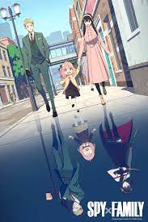
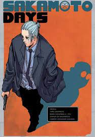
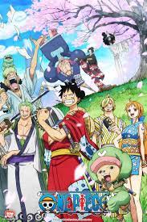
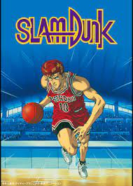
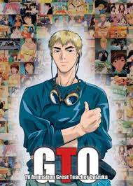
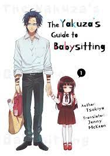

A spy on an undercover mission gets married and adopts a child as part of his cover. His wife and daughter have secrets of their own, and all three must strive to keep together.

Taro Sakamoto used to be an unrivaled hit-man, earning legendary status in the underworld. But one day, the unthinkable happened. Sakamoto fell in love.A gaming otaku and a fujoshi reunite for the first time since middle school at work
A retired gangster spends his time as a househusband carrying out home chores.

Follows the adventures of Monkey D. Luffy and his pirate crew in order to find the greatest treasure ever left by the legendary Pirate, Gold Roger. The famous mystery treasure named "One Piece".A college student spends his year at the seaside town of Izu, having fun on the beach with his school friends

About Sakuragi Hanamichi, a freshman of Shohoku High School who joins the basketball team because of the girl he has a crush on, Haruko. Although he is newbie in this sport, he is no ordinary basketball player.

Onizuka, an ex-biker gang leader, has decided to become the world's greatest teacher for the purpose of meeting sexy high school girls. But he just found himself teaching a class of delinquents and everyone tries to find a way to fire him.
The story of Saitama, a hero that does it just for fun & can defeat his enemies with a single punch.

Yakuza soldier Kirishima Tooru ha a very bloody, approach to life. The head of the Sakuragi family is so concerned about Kirishima's lack of restraint, he orders Kirishima to become the babysitter to his young daughter, Yaeka.